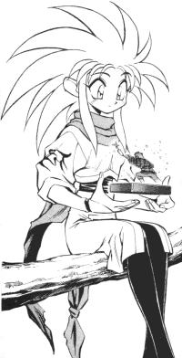

How to add a FanFic |
Some important information on adding your fan fiction to the archive. Please follow the posting guidelines in order to expedite the submission process. |
If you have any Tenchi Muyo related fan fiction, I will be happy to post your fan fiction on this page. Please E-mail me your fan fiction, and I will post it on my next general update. As long as you follow a few minimum requirements such as the quality filter, than your story will be added promptly.
You must include the following information that accompany each submission.
At the top of the E-mail please use the following header format when you E-mail your story. (This is just an example.)
GenericFirst Name "Pen Name" last Name (E-mail Address)
FanFic Division
Series Title - Subdivision # : "Chapter Title"
Short Description.Example
Brook "the Total Anime Nut" Kuhn (bkuhn@ucsd.edu)
Regular
To Love and To Hate - Chapter 4 : "A Heart Still Beats"
Aeka finds happiness where she least expected it.
If you send me a fan fiction, please send it in ASCII (American Standard Code for Information Interchange) format. Also known as simple text. This can be accomplished by either copy and paste it in the E-mail message window or attach it as a simple MS-DOS text file. Many word processors allow you to save in the most simplistic format.This can be done by using the command "Save As..", then selecting the "Save as Type" as "MS-DOS Text File with line breaks." Please, don't send me a fancy file format. The odds are, if I can not read it, so can't anyone else. Here is an example.
It is highly recommended that you add a copyright notice to your fan fiction for any copyrighted work you use. Please give credit where credit is due. You should also include any other information I should know about the concerned fic. If this is your first fic, I suggest reading "How to Write a FanFic" before posting your story. It will help you greatly.
Please allow up to a month for your story to be posted; I tend to upload stories in bunches. I don't have the time to upload a story immediately. So, please be patient. If you would like to be informed of updates to the page, please join the Tenchi Muyo Fan Fiction Mailing List.
If you have any questions, feel free to E-mail me.
Note concerning recent Submissions
I have recently noticed a few problems with submissions.
Ultimately, do try to follow the posting guidelines. It will help me quickly update your works into the archive. If you do not follow the posting guidelines, I may not be able to post your story.
{kind=link}